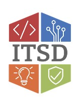
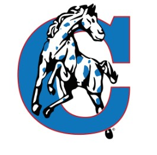
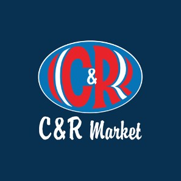

| Career | Skills Learned | Years of Service |
|---|---|---|
| ITSD - Systems Admin Technician | Server Admin, VMware, Windows Updates, Cloud (Azure/AWS) | 2023 -> Present |
| California R‑1 - IT Intern | Device Repair, Cabling, AP Installs, Help Desk | 2020 -> 2022 |
| C&R Market - Stocking/Bagger | Customer Service | 2019 -> 2020 |
| Overall IT Experience: | 4+ Years |
Office of Administration ITSD – Systems Administration Technician
Dates: August 2023 – Present
In this role, I install, manage, and troubleshoot server hardware and UPS systems. I configure and maintain Microsoft Server operating systems and work with VMware vCenter/ESXi, Dell OpenManage, Lenovo XClarity, WSUS, and BigFix. I also manage monthly Windows Updates and cloud servers in Azure and AWS, using tools such as Cherwell and SolarWinds for ticketing and monitoring.
Major Accomplishments:
- Maintained and updated multiple production and development servers with no major downtime.
- Resolved the CrowdStrike outage across 800+ Windows servers in under two days.
Reflection: This position strengthened my enterprise server administration skills and exposed me to cloud platforms and large‑scale IT infrastructure. Working with a remote team improved my communication and problem‑solving abilities. This job has prepared me for advanced roles in systems administration and IT infrastructure engineering.

California R‑1 School District – IT Intern
Dates: May 2020 – August 2021 / May 2022 – August 2022
As an IT Intern, I managed and repaired district Chromebooks and other devices. I installed access points, cabling, projectors, laptops, and desktops. I also provided help desk support for teachers, administrators, and staff, ensuring smooth day‑to‑day technology operations across the district.
Major Accomplishments:
- Supported district‑wide technology upgrades and maintenance.
- Improved efficiency of IT support for staff and students.
Reflection: This internship gave me hands‑on experience with IT support and hardware/software troubleshooting. I learned how to communicate effectively with non‑technical users and manage multiple tasks at once. It strengthened my problem‑solving skills and confirmed my interest in systems administration.

C&R Market – Stocking/Bagger
Dates: 2019 – 2020
At C&R Market, I assisted customers at checkout, stocked shelves, organized inventory, and maintained store cleanliness. I worked closely with team members to ensure the store operated smoothly and efficiently.
Major Accomplishments:
- Recognized consistently for reliability and teamwork.
- Improved speed and accuracy in checkout and inventory tasks.
Reflection: This job taught me the importance of customer service, teamwork, and time management. I learned how to handle responsibilities in a professional environment and developed strong organizational habits that continue to help me in my IT career.
